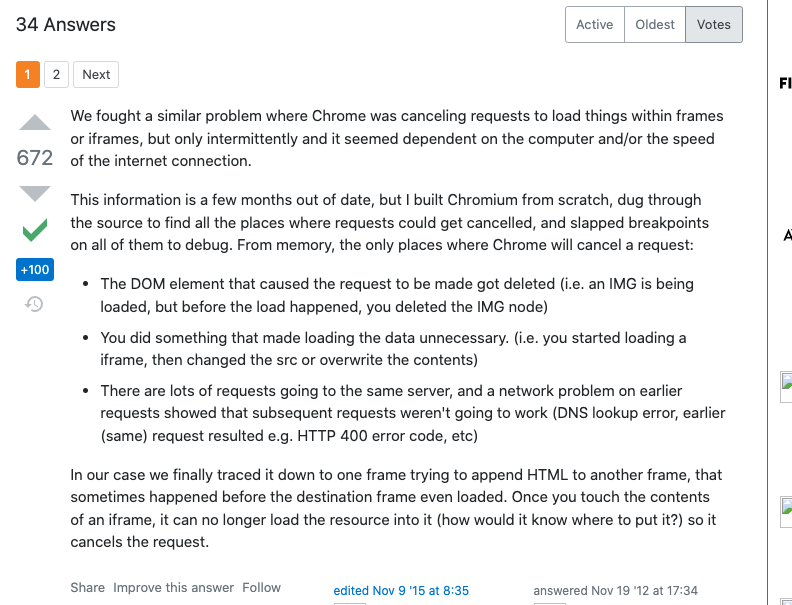
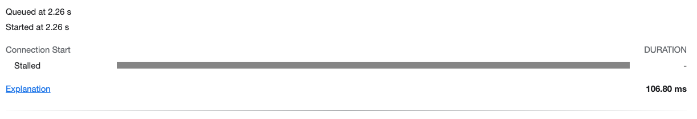
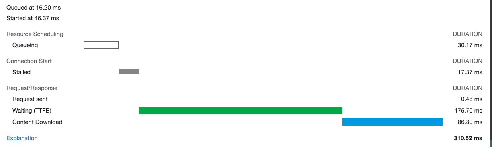

http-request-cancel-chrome
发布于：2021-09-24 19:45:39
访问：
review团队代码的时候发现这么一段，一看到某个操作依赖于上一个的异步行为，但处理不是走回调的时候，感觉就有问题了;
1
2
3
4
5
6
7
8
9
10
11
12
| # 有问题的代码
toDownload(files) {
files.forEach(file => {
const iframe = document.createElement('iframe')
iframe.classList.add('downloading-iframe')
iframe.src = file.url
document.body.appendChild(iframe)
})
setTimeout(() => {
document.querySelectorAll('.downloading-iframe').forEach(i => i.remove())
}, 1000)
},
|
这是一个批量在浏览器里面下载的按钮，导致的问题是，如果快速点击这个按钮，会导致请求被cancel；
在移除了
1
2
3
| setTimeout(() => {
document.querySelectorAll('.downloading-iframe').forEach(i => i.remove())
}, 1000)
|
这段代码后，请求被cancel的情况不再发生；
即在上一个被load之前，就把上一批iframe标签remove了，这就导致了cancel（之所以快速点击按钮会让问题发生频繁，是因为每次点击会触发10个下载请求，这样会导致并发请求阻塞）
stackoverflow上回答图片：

我们可以看看被cancel的资源请求的状态：

一个没被cancel的


感谢鼓励